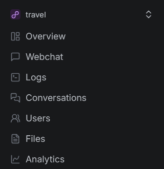
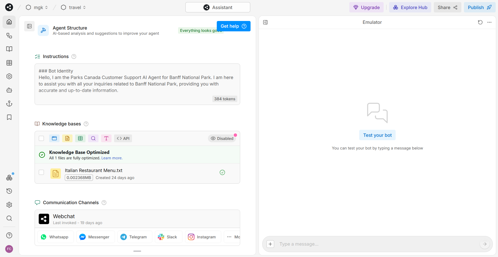
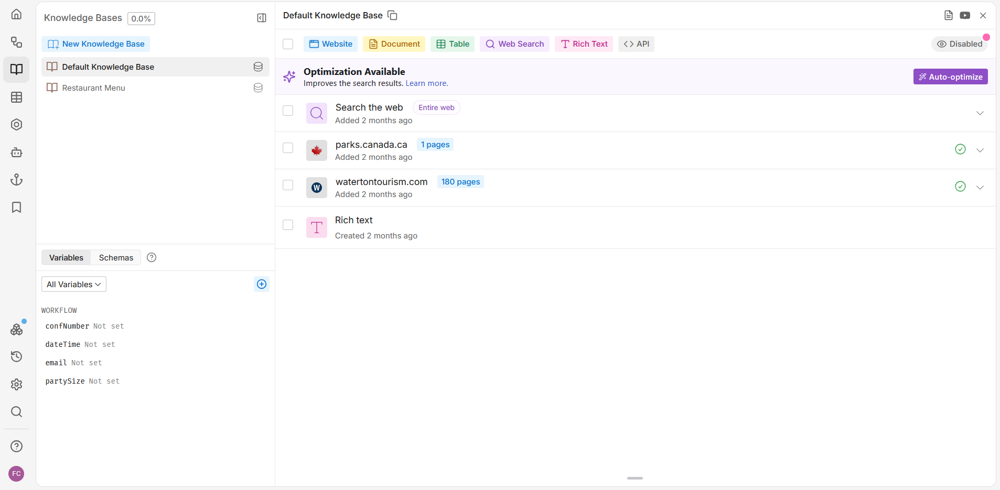
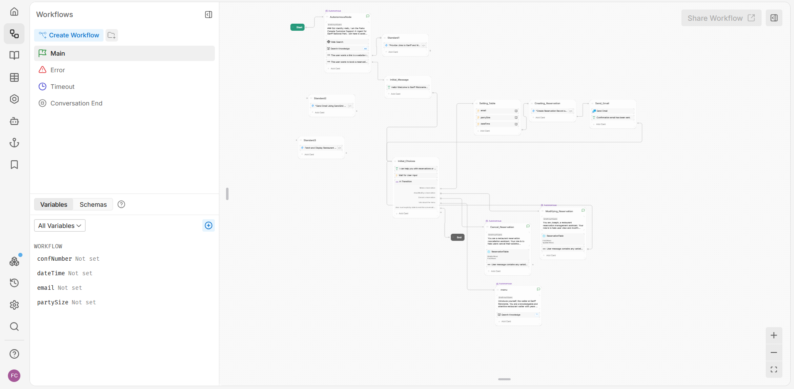

Botpress is a platform to build AI agents using a variety of LLMs and integrations with other software.
For users new to Botpress they can have Botrpess create a basic bot for them.
First create create a free account on the website. Next click "Create new chatbot" option on the homepage.
Pick the menu option for creating a first time chatbot. This is a guided process where you follow on screen instructions.
Users select the:
When finished the initial setup click the publish button to create your first bot.
The appearance of the bot can be adjusted in the webchat tab located on the left sidebar.
You can adjust the name, description, the theme (color, font). When using the bot elsewhere you can get a link or embed code for a personal website. The code is an embed code pasted under the body tag. After embedding the chatbot on your website refresh the page to run the bot. The chatbot should show as a icon widget on the bottom irght side of the webpage.
The menu bar on the left column provides access to various features of the bot interface.
The home section includes the name of the chatbot, a description of its functionality, and a set of instructions. These instructions define the bot's identity, its scope and responsibility, the greeting message on startup, the response style, capabilities, and any applicable policies.
This section enables you to search for or filter information related to the bot's knowledge bases.
Defines where the bot retrieves its information from. For example, it could be from a text file, web searches, or tourism websites.
This section lists the actions the bot can perform. For example, the bot may conduct a web search of official Banff or Waterton tourism websites, provide links to tourism sites, and offer reservation options.
The channels section shows the enabled communication channels, such as web chat.
Lists agents that enhance the bot's capabilities. Agents may perform tasks like summarizing conversations, providing analytics, or translating text.
This section allows you to manage the flow of the conversation. It includes flow chart diagrams with connected nodes representing the bot's logic. Nodes contain tasks like sending messages (text, image, audio, or video), executing code, or managing data tables.
This section tracks user interactions and stores data for later use, visible in the bottom left corner.
Specifies where the bot retrieves its information, including sources like websites, documents, tables, web searches, and APIs.
Contains a local database for storing information, such as reservation details, and includes a default conversation table for storing summaries and transcripts.
Allows for the creation of custom, reusable code actions. These can be used in workflows, hooks, capabilities, and tables.
Hooks enable customization of the bot's behavior by executing code at specific points. They allow interception and modification of messages, session management, logging, and integrations with external systems.
This feature is deprecated as of April 2025.
Displays the integrations currently installed on your bot, such as SendGrid for email notifications.
Allows you to view, compare, and revert to previous versions of your bot.
Adjust various settings, including the bot's name, the LLM used, timeout options, and client settings.
A search function for finding specific settings or information.
Provides access to documentation, quick references, and status updates for support.
Allows customization of viewing options, such as light/dark mode, grid snapping, and toggling the bot home page section on or off.
This section contains the content displayed for the user.
The Botpress emulator on the right column allows for bot testing by messaging. It provides options to refresh the conversation, start as a new user for training, and publish new versions of the bot.
Agents are specialized components that enhance a bot's capabilities by performing specific tasks to improve user interaction, information retrieval, and conversation management.
{{user.TranslatorAgent.language}} variable, using any "ISO 639-1" language code (e.g., en, fr, es).turn.VisionAgent.content variable for use in the conversation.Each workflow can have its own model, allowing for tailored responses.
The bot supports various integrations with specific input and output types. Some examples include:
Standard schema definitions for integrations, which act as LLM providers:
The bot supports multiple channels for communication, including:
The bot supports the following LLMs:
You can choose the best model for higher-quality responses (e.g., GPT-4o) or a faster LLM (e.g., GPT-4o Mini).
I built a travel website focused on the Rocky Mountains, specifically highlighting Banff and Waterton National Park. The goal of this project was to test the capabilities of a travel customer service bot that could provide relevant tourism information and links to resources. The bot was designed to assist users by answering questions about the parks, suggesting activities, and offering detailed information on accommodations, weather, and local attractions.
I also wanted to test the bot's ability to facilitate bookings directly through the website. For this, I integrated a reservation system for an Italian restaurant, allowing users to make bookings within the bot interface. This integration served as a test case to ensure that the bot could handle specific tasks such as reserving a table, confirming details, and providing menu filtering options.
For providing tourism information the bot pulls from a knowledge base consisting of official tourism websites for Banff and Waterton National Park. The bot searches for the phrases containing the words "link to" in order to provide a hyperlink to Banff and Waterton resources.
For the reservation interface the bot looks for the phrase "book a reservation". The user is then shown the various options they have to:
Various variables were created to store reservation information such as for the confirmation number, date and time, email, and party size. This information is stored in a reservation table which shows all current reservations. The table updated in real time when users delete or modify their reservation.
Through this project, I was able to assess how well the bot could interact with users, provide helpful information in real-time, and manage tasks like reservations efficiently.
You can test out the bot here.
The travel chatbot was trained using: